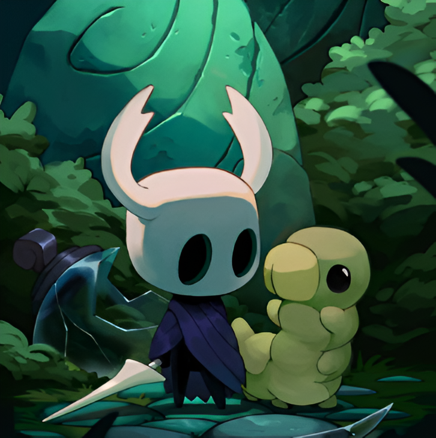

📷 Imágenes del juego



Hollow Knight es un metroidvania desarrollado por Team Cherry. Ambientado en el misterioso reino subterráneo de Hallownest, el jugador controla a un caballero silencioso que explora vastas cavernas, ciudades olvidadas y templos antiguos. El juego destaca por su estilo artístico dibujado a mano, su banda sonora atmosférica y un nivel de dificultad desafiante. Es considerado una joya del género indie gracias a su jugabilidad profunda, exploración libre y combates intensos contra jefes.